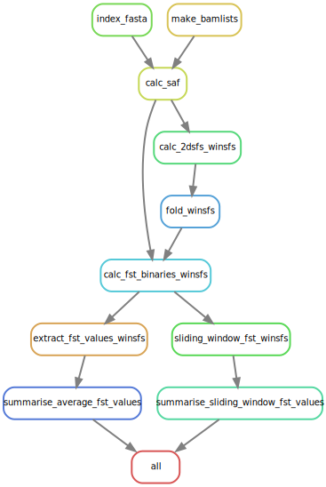

# do this on a compute node or acompile
mamba create -n angsd bioconda::angsd16 Estimating Site Frequency Spectra and a few applications thereof
16.1 What is the SFS?
- Typically the fraction of sites in a sample of \(n\) diploids that carry \(1, \ldots, 2n-1\) copies of the derived (as opposed to the ancestral) allele.
- With whole genome sequencing data, we can also include the categories of 0 and \(2n\) copies of the derived alleles.
16.2 Why is it useful?
- A lot of population genetic theory has been done about what the SFS should look like under different demographic scenarios and/or selection.
- Many population genetic summary statistics can be shown to be functions of the SFS. A worthy read about how nearly all the myriad simple tests for non-neutrality (Tajima’s \(D\), Fay and Wu’s \(H\), etc.) can be written as functions of the SFS is Achaz 2009.
- Programs exist (\(\partial a \partial i\), moments, etc.) to use SFS (and particularly multi-dimensional—i.e. multi-population—SFS) to estimate demographic history of species.
- Pairswise \(F_\mathrm{ST}\) between populations can be computed as a function of the 2-D SFS.
- The SFS provides an exceptional amount of data reduction: from terabytes of sequencing data to a handful of numbers. Obviously this discards a lot of information, but for some inferences, the SFS is sufficient or nearly so.
16.3 More on the SFS itself with simple examples
- Illustrate on the whiteboard with a simple data set assuming fully resolved genotypes.
- Discuss the \(\theta/k\) result from the neutral coalescent.
- Show how easy it is to estimate SFS with complete and certain genotype data.
- At any site, show that the calculation involves lining the genotypes up horizontally, with the cumulative numbers of gene copies in each, stacked vertically above them.
16.4 Uncertainty in the genotypes
- With low-coverage data we don’t get to observe the genotypes with certainty.
- We don’t even know ahead of time if there is a SNP there.
- So, the ANGSD approach is to first calculate the likelihood of each number of derived alleles, from \(0\) to \(2n\), by considering all the possible underlying genotypes. Storing those results, and then using those to do inference.
- Let’s show what that looks like at a single site on the whiteboard.
16.5 ANGSD doSaf
One of the options to ANGSD is
-doSaf. This creates a “site allele frequency” file, which is a binary file that holds the likelihoods for each site of the number of copies of the derived allele are at that site.Documentation for it is at: https://www.popgen.dk/angsd/index.php/SFS_Estimation
There is also “onboard” documentation with the program itself. So, let us get ANGSD in a conda environment so we can call it. If you don’t already have ANGSD in a conda env, do this:
Once that is done, activate the angsd environment and call the program with the
-doSafoption and nothing else to get the onboard help:# activate the environment mamba create -n angsd bioconda::angsd # call the program with no other args angsd -doSaf
16.6 Running ANGSD doSaf
We are going to run doSaf on our course data (the 16 Chinook salmon from the Trinity River).
As always, before we start doing anything you will want to sync the main branch of your fork of the con-gen-csu repo and then pull changes down to the main branch of the local clone on your cluster.
We are going to run angsd -doSaf within a Snakemake workflow that I have on GitHub. The purpose of the workflow is to compute pairwise \(F_\mathrm{ST}\) between different groups of samples, and doing so requires the -doSaf calculation from ANGSD.
16.6.1 Cloning the workflow
So, the first thing that you will need to do is clone the Snakemake workflow. You can fork it (if you like) and then clone your own flow, OR you could just clone the repo as is. Make sure that you DO NOT clone it into your con-gen-csu directory. Rather, it would be better to clone it into your projects or scratch directory.
Cloning eriqande/mega-lcwgs-pw-fst-snakeflow directly, as opposed to forking it and cloning your fork, would look like this:
# first cd into your projects and scratch directories
git clone git@github.com:eriqande/mega-lcwgs-pw-fst-snakeflow.git16.6.2 Symlinking the results in our con-gen-csu results
For calculating Fst we will use the BAMs that were created when you ran exercise 008. To make this relatively easier to describe (basically so that the same paths will work for all of us regardless of where everyone’s BAM files are) we will use symbolic links, making a symbolic link to your con-gen-csu directory in your home directory, named CGC.
To do this,
navigate inside of your
con-gen-csudirectory,do
pwd.
Copy the resulting absolute path
cdto yourmega-lcwgs-pw-fst-snakeflowdirectoryThen, in that
mega-lcwgs-pw-fst-snakeflowdirectory, do:ln -s absolute-path-to-con-gen-csu CGCbut replace
absolute-path-to-con-gen-csuwith the actual path to yourcon-gen-csudirectory.
For example, when I do this on alpine it looks like:
# here I get the absolute path to con-gen-csu and I copy it
% pwd
/home/eriq@colostate.edu/projects/con-gen-csu
# then I change directories to the mega-lcwgs-pw-fst-snakeflow directory
% cd /home/eriq@colostate.edu/projects/mega-lcwgs-pw-fst-snakeflow/
# then I paste the con-gen-csu path in to do:
ln -s /home/eriq@colostate.edu/projects/con-gen-csu CGC16.6.3 The config for our Trinity River Chinook
We have a config file that will let you use your bams through the CGC alias you just made. The config files to allow the mega-lcwgs-pw-fst-snakeflow to use the bams from the Trinity River Chinook salmon are in the directory extras/lcwgs-pw-fst-config in the con-gen-csu repo, which means that from within the mega-lcwgs-pw-fst-snakeflow directory, you can access it via the relative path CGC/extras/lcwgs-pw-fst-config. The config files within that directory, with links to them on GitHub, are:
config.yaml: the main config file for Snakemake to use.bams.tsv: paths to the BAM files for the 16 Chinook salmon, and group designations (spring or fall)chroms.tsv: summary information about the chromosomes.pwcomps.tsv: description of groups to make pairwise \(F_\mathrm{ST}\) comparisons of.
16.6.4 A Simple Dry run
We can do a simple dry run to see which jobs will be run if we were to do all the steps for calculating \(F_\mathrm{ST}\), including \(F_\mathrm{ST}\) values in sliding windows.
Do the following after getting onto a compute node with four cores, by, for example, doing acompile -n 4 or srun -p atesting -c 4 --pty /bin/bash
Type this in the mega-lcwgs-pw-fst-snakeflow directory
conda activate snakemake-8.5.3
snakemake -np --configfile CGC/extras/lcwgs-pw-fst-config/config.yamlPhew! That spits out a lot of different jobs. Let’s quickly have a look at what that is doing by looking at the rulegraph:

Aha! Most of the jobs are happening after the calc_saf rule, which is what we are focused on.
16.6.5 Only run things as far as the calc_saf rule
This is a good time to talk about a useful option to Snakemake. If you want to only run a workflow up to a certain point, you can provide the --until option, giving it a rule name. So, try:
Type this in
snakemake -np --until calc_saf --configfile CGC/extras/lcwgs-pw-fst-config/config.yamlThat just runs 8 jobs making bamlists (short little jobs) and 8 jobs making SAF files—4 chromosomes in each of two groups.
Let’s see about running all of those:
snakemake -p --use-conda --until calc_saf --cores 4 --configfile CGC/extras/lcwgs-pw-fst-config/config.yaml